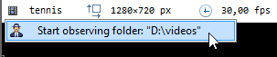

Replay folder observers¶
Feature description¶
Replay folder observers are special playback screens that constantly monitor a specific folder for new videos. When a new video is created in the monitored folder, the playback screen automatically loads it and starts playing it. This can be used to automate the capture and replay the feedback loop.
The replay folder observer works at the file system level and is independent from the source or process creating the video. The videos can be created by the same or another instance of MotionON, or by an external process.
Apart from the monitoring mechanism, the video is loaded normally. In particular the annotation file created by the capture screen is loaded and drawings created on the capture side are imported.
Creating a replay observer¶
You can create a replay observer from the following places:
From the menu . This opens a folder selection dialog.
In the files and shortcuts tabs of the explorer panel, right click a folder or a file and choose .
In the capture tab, right click a file in the capture history and choose .
In the playback screen, right click the main video image and choose . This opens a folder selection dialog.
In the capture screen, in the recently captured files list, right click the thumbnail of a file and choose .
The recently opened folder observers are listed under the menu .
Note
The menus on files are opening the observer on the parent folder of that file. This observer will immediately load the most recent file of the folder which is not necessarily the file used to start it.
Activation and deactivation¶
When manually loading a video into a replay folder observer, the observer is not deactivated and will continue to monitor the folder.
In order to deactivate the monitoring and loading of new videos, you can turn the folder observer into a regular playback screen by clicking the observer icon in the infobar of the screen.
Conversely, in order to turn a normal playback screen into a replay folder observer, click the video icon in the infobar of the screen.
Bidirectional annotation linking¶
The annotations created on the capture screen are stored in a companion KVA file next to the recordings.
When the recorded video is opened in MotionON the annotations are loaded and can be modified.
Because the capture screen is simultaneously monitoring the annotation file it last exported, any changes to the annotations on the playback side will be reflected into the capture screen. The next recording from this capture screen will then use the updated annotations.